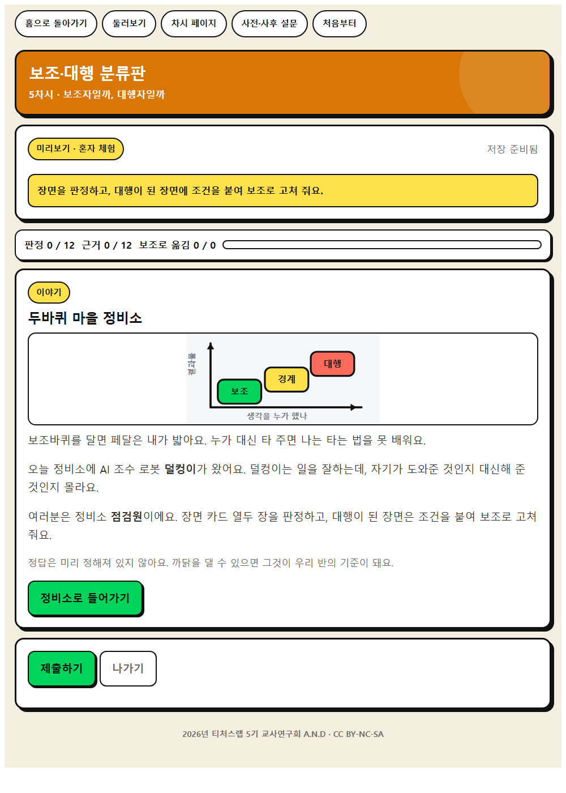
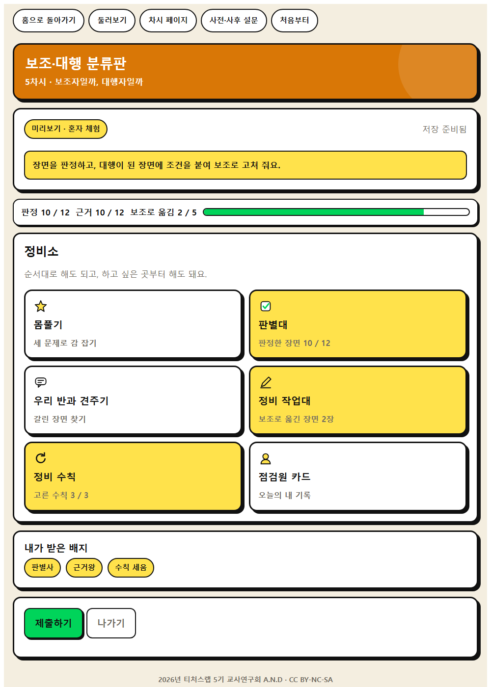
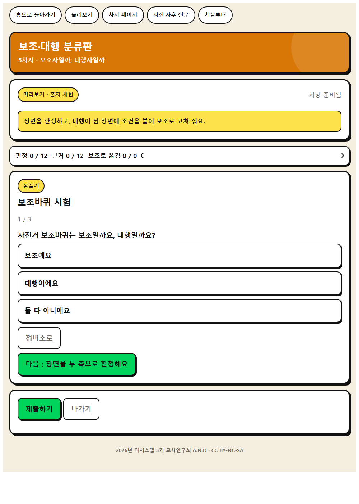
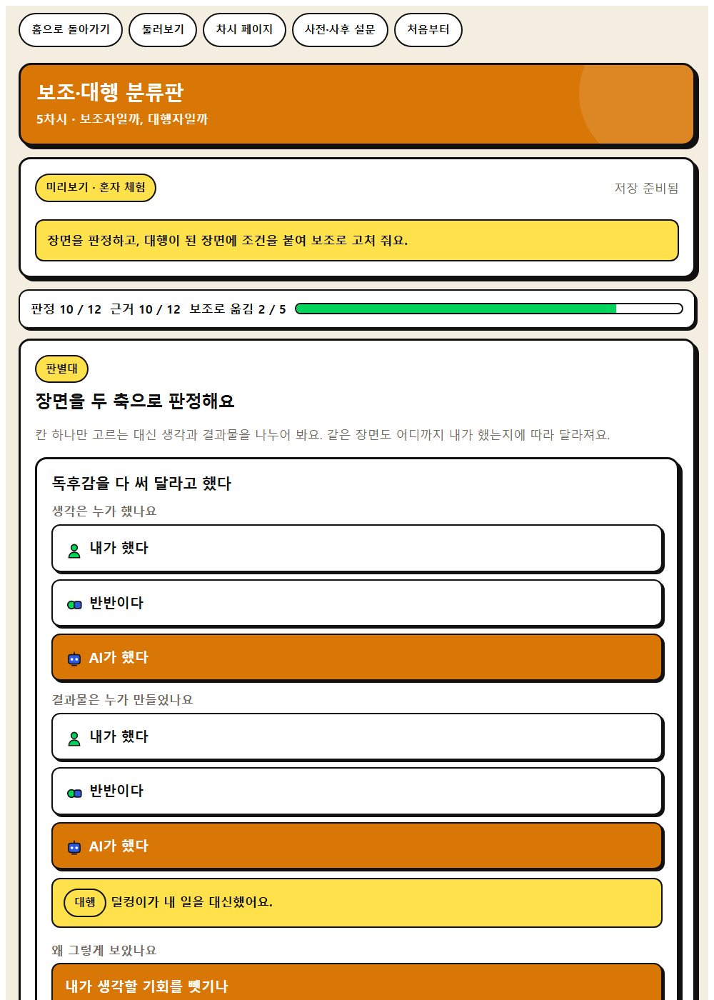
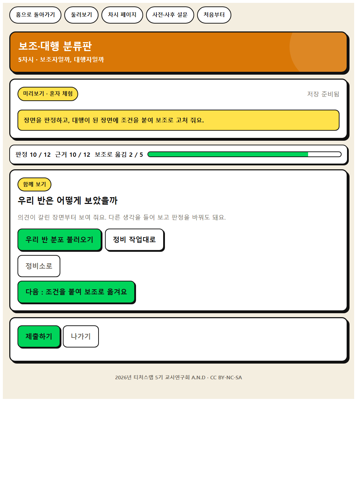
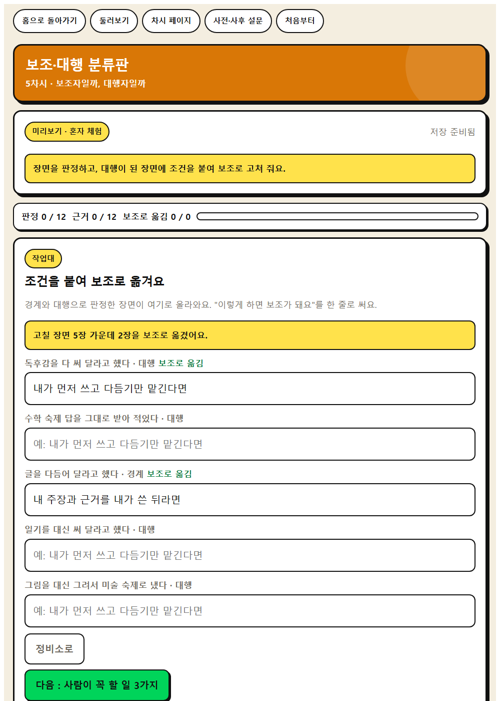
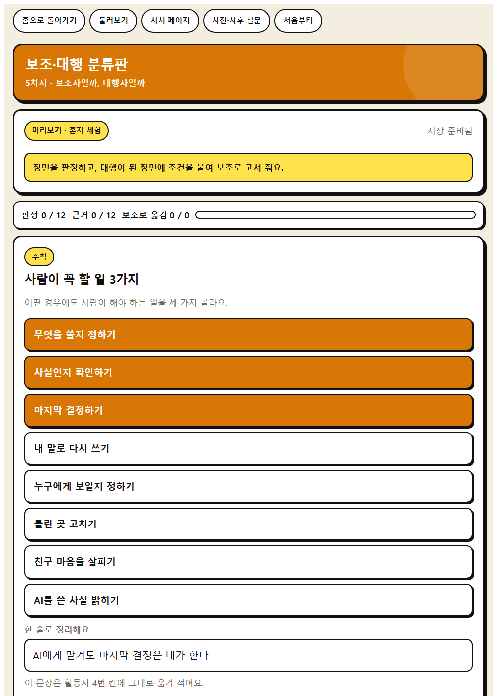

WISE 판단 · 5차시
보조·대행 분류판
AI 활용 장면 12개를 보조와 대행으로 분류하고, 모둠 사이에 갈린 장면을 학급 화면에서 다시 토의한다.
이 앱으로 무엇을 하나
AI가 나를 도와주는 순간과 나를 대신하는 순간을 구분해 봅시다.
주체성문제해결 사고맥락적 사고
배우는 것
- 주체성 · 과제 특성에 따라 AI 사용 여부를 결정하고 AI와 나의 역할 경계를 정하기
- 문제해결 사고 · AI와 사람 각각의 역량과 한계를 고려하여 할 일을 나누기
- AI적정활용 구성요소 · ② 학습자 주체성
- AI적정활용 구성요소 · ④ 인간 중심성과 역할 경계
체험하는 법 (세 걸음)
- 혼자 먼저 해 본다. 앱을 열고 닉네임만 넣은 뒤 둘러보기를 누른다. 저장되지 않으니 마음껏 눌러 본다. 웹앱 열기
- 수업 직전에 방을 만든다. 앱에서 선생님 화면을 누르고 비밀번호 네 자리를 정한 뒤 새 방 만들기를 누른다. 여섯 자리 방 번호가 나온다. 칠판에 적는다.
- 학생이 들어온다. 같은 주소를 열어 방 번호와 닉네임, 나만 아는 숫자 네 자리를 넣는다. 제출하면 선생님 화면에 바로 모인다.
기기가 모자라면 모둠에 한 대로 함께 하고, 없으면 인쇄 장면 카드와 모둠 분류판만으로 진행하고, 학급 집계는 칠판 스티커로 대신한다.
화면 미리 보기
실제 앱 화면입니다. 눌러서 크게 볼 수 있습니다.








수업 흐름과 발문
도입 · 5분
동기 유발
동기 유발
- 자전거 보조바퀴와 자전거를 대신 타 주는 사람, 무엇이 다른가요?
- AI도 그럴 수 있을까요?
도입 · 5분
학습 문제 확인
학습 문제 확인
- AI가 나를 도와주는 순간과 나를 대신하는 순간을 구분해 봅시다.
전개 · 30분
[활동 1] 장면 카드 나누기
[활동 1] 장면 카드 나누기
- 장면 카드 12장을 보조와 대행으로 나눠 봅시다.
- ‘어려운 낱말의 뜻을 물었다’는 어디인가요?
전개 · 30분
[활동 2] 애매한 카드 토의하기
[활동 2] 애매한 카드 토의하기
- 모둠마다 다르게 놓은 카드를 골라 왜 그렇게 생각했는지 말해 봅시다.
- 그렇다면 보조와 대행을 가르는 기준은 무엇일까요?
전개 · 30분
[활동 3] 사람이 할 일 정리하기
[활동 3] 사람이 할 일 정리하기
- 어떤 경우에도 사람이 해야 할 일을 모둠에서 3가지 적어 봅시다.
정리 · 5분
배움 정리
배움 정리
- 최근 내가 AI를 쓴 장면은 보조였나요, 대행이었나요?
정리 · 5분
다음 차시 예고
다음 차시 예고
- 다음 시간에는 네 가지 신호로 더 자세히 나누어 봅시다.
함께 보면 좋은 자료
- 자료 학생용 가이드라인 생성형 인공지능 활용교육 (71쪽 적당히 사용하기) 경기도교육청
71쪽의 도움받아도 되는 경우와 안 되는 경우를 칠판에 옮겨 적고 두 칸으로 나눈다.
- 자료 EBS 소프트웨어·인공지능 교육 (이솦)
초등용 AI 학습 콘텐츠와 수업 영상을 무료로 받을 수 있다.
- 영상 EBS AI 단추
학년별 AI 개념 영상. 도입 자료로 한두 편 골라 쓴다.
- 영상 EBS Learning 유튜브 채널
채널 안에서 차시 주제로 검색해 최신 영상을 고른다.
- 뉴스 대한민국 정책브리핑
AI 정책과 학교 현장 기사. 사실 확인이 된 자료를 인용한다.